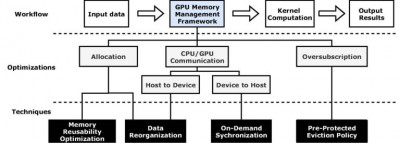

|
Calculation shows why heavy quarks get caught up in the flow
PHYS ORG - 2023
New results will help physicists interpret experimental data from particle collisions at RHIC and the LHC and better understand the interactions of quarks and gluons. |

|
Nuclear Physics Gets a Boost for High-Performance Computing
HPC Wire - 2022
Efforts to harness the power of supercomputers to better understand the hidden worlds inside the nucleus of the atom recently received a big boost. |

|
How US supercomputers will next model elementary particles
The Register - 2022
If todays tech gets you down, remember supercomputers are still being used for scientific progress |
|  |
Reducing Redundancy to Accelerate Complicated Computations
Jefferson Lab Highlight - 2022
Scientists at Jefferson Lab and William and Mary developed MemHC to improve the efficiency of supercomputer calculations |

|
Nuclear Physics Gets a Boost for High-Performance Computing
Jefferson Lab Highlight - 2022
Jefferson Lab and its partners benefit from Scientific Discovery through Advanced Computing Partnership in Nuclear Physics grants |
For the First Time, Scientists Rigorously Calculate Three-Particle Scattering from Theory
DOE Office of Science Highlight - 2022
The goal of nuclear physics is to describe all matter from its simplest building blocks: quarks and gluons. Found deep inside protons and neutrons, quarks and gluons also combine in less common configurations to make other subatomic particles of matter. For scientists, producing these less-common particles in experiments is an interesting challenge. A new theory method aids in those efforts by predicting which less-common particles an experiment will produce. |
|

|
First QCD determination of the decays of a $1^{-+}$ hybrid meson
Phys.Rev.D 103 (2021) 5, 054502
For the first time in lattice QCD, a calculation has shown the presence of an exotic $1^{-+}$ state appearing as an unstable resonance. The result shows that the longstanding model-based proposal that such a state would couple more strongly to the $\pi b_1$ final-state than the lower-lying $\pi \eta, \pi \eta'$ and $\pi \rho$ final-states is confirmed. Possible implications for the recently observed $\pi_1$ experimental candidate state are discussed. |

|
Correlated Dirac Eigenvalues and Axial Anomaly in Chiral Symmetric QCD
Phys. Rev. Lett. 126, 082001 (2021)
We introduce novel relations between derivatives of the Dirac eigenvalue spectrum with respect to the light sea quark mass and the $(n+1)$-point correlations among the eigenvalues of the massless Dirac operator. Using these relations we present LQCD results for the derivatives at light pion masses and at a temperature of about 1.6 times the chiral phase transition temperature. We find that eigenvalue density develops a peaked structure. We demonstrate that this phenomena is responsible for the manifestations of axial anomaly in two-point correlation functions of light scalar and pseudoscalar mesons. After continuum and chiral extrapolations we find that axial anomaly remains manifested in two-point correlation functions of scalar and pseudoscalar mesons in the chiral limit. |

|
Lattice QCD constraints on the parton distribution functions of $3^{}{\rm He}_3$
Phys.Rev.Lett. 126 (2021) 20, 202001
The fraction of the longitudinal momentum of $3^{}{\rm He}_3$ that is carried by the isovector combination of $u$ and $d$ quarks is determined using lattice QCD for the first time. The ratio of this combination to that in the constituent nucleons is found to be consistent with unity at the few-percent level from calculations with quark masses corresponding to $m_\pi\sim 800$~MeV, extrapolated to the physical quark masses. This constraint is consistent with, and significantly more precise than, determinations from global nuclear parton distribution function fits. Including the lattice QCD determination of the momentum fraction in the nNNPDF global fitting framework results in the uncertainty on the isovector momentum fraction ratio being reduced by a factor of 2.5, and thereby enables a more precise extraction of the $u$ and $d$ parton distributions in $3^{}{\rm He}_3$. |

|
Distillation based hadron matrix elements at high momentum
Phys.Rev.D 103 (2021) 3, 034502
Extraction of hadronic observables at finite momenta from LQCD is constrained by the well-known signal-to-noise problems afflicting all such LQCD calculations. In this work we extend the idea of momentum-smearing by exploring modifications to the distillation framework. Together with enhanced time slice sampling and expanded operator bases engendered by distillation, we find ground-state nucleon energies can be extracted reliably for $\vec{p}\le 3$ GeV and matrix elements featuring a large momentum dependence can be resolved. |

|
NERSC's Cori System Reveals Integral Role of Gluons in Proton Pressure Distribution
NERSC Highlight, 2019-07-08
|

|
MG Proto: Multigrid LQCD Propagators for Multicore x86 systems
SciDAC Highlight, 2019-05-16
|

|
Summit speeds calculations in the search for exotic particles
OLCF Highlight, 2018-09-17
|

|
Accelerating QCD Gauge Generation on GPUs
SciDAC Highlight, 2018-05-01
|